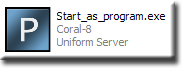
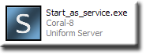
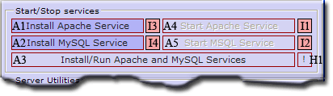
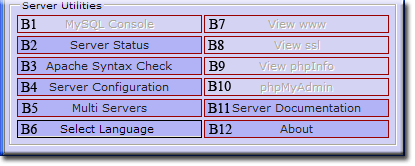
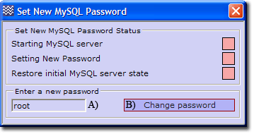

Quick Start Guide - More Detail
This guide adds more detail to the basic Quick Start Guide. It covers installation and how to run The Uniform Server as a program or service.
Installation
|
The Unform Server does not have a typical program installation. Instead, just execute the downloaded file (Coral_x_x_x.exe). The installation extraction defaults to creating "C:\UniServer", with the folder structure as shown on the right. Once extracted, the servers are ready to run.
While it may seem that by this point you have successfully completed the installation, there is one aspect that needs to be validated.
Server Paths
You can install The Uniform Server in nearly any location, with the exception that the path to folder UniServer must not contain spaces. Do not use "C:\Program Files", for example (which has other problems as well, such as restricted permissions and system restore inconsistencies). We recommend installing to the drive root, such as "C:\" or "D:\" for simplicity, but other locations, such as "C:\test1\appserver" work just as well.
Note: The space character restriction is generic and applies to other WAMP stacks as well. Many applications that will be hosted on the server do not tolerate spaces in paths. The system restore issue applies mainly to individual component installs.
If the current installation is on a faulty path, the situation can eaily be resolved by just moving the UniServer directory to a proper location. You do not have to delete the directory and reinstall. For example, just rename "D:\bad path\UniServer" to "D:\good_loc\UniServer".
|

|
Installing your Website or Test pages
Web pages are served from folder UniServer\www (B), which is commonly referred to as the server root folder. Simply copy your Website into the root folder www.
Note 1: Unix installations use a root folder named htdocs. When using an application installation guide that refers to htdocs, use folder www instead.
Note 2: The file structure is not static. For example, running Vhost or database backup creates the new folders UniServer\vhosts or UniServer\db_backup respectively.
The root folder www already contains a very simple web-site consisting of a single page named index.php. Its purpose is to provide a test page, allowing you to confirm that the server is functioning properly.
Before installing your Website, you can delete the index.php file. Don't delete the .htaccess and favicon.ico files. They have the following purposes:
- .htaccess - This file is part of the server security and should not be deleted.
- favicon.ico - This is a small image file displayed in a browser next to a Web page name. You can replace this with your own file, but use the name favicon.ico so browsers will display it properly.
Note: Having a favicon image is not a requirement, but modern browsers attempt to load this image by default. If your server does not contain one, an error is logged in Apache's log file.
Server Control
The UniServer folder contains two files Start_as_program.exe and Start_as_service.exe which open The Uniform Server's control menu for running the servers either as a standard program or as a service respectively.
This control menu is referred to as UniController.
Run as Program
- Start_as_program.exe Opens a menu that runs the servers as a standard program. When using this menu nothing is installed to your operating system's registry. This is ideal for a development server, especially when running from a USB memory stick, since you do not have to perform anything special to stop or remove the servers.
|

|
- Run servers - Click the button "Start Both" (A3). This starts both servers. Some pop-ups are initially displayed; you may click "no" to these (but see Set New MySQL root password which follows). If challenged by your firewall, allow access for both Apache and MySQL. Your browser will automatically start and display the server splash page. Be aware that this is not the index.php file in wwww.
- Your Web site - If you installed a Website in root folder www containing either an index.html or index.php page, clicking View www will display your page instead of the test page.
|

|
Run as Service
- Start_as_service.exe Opens a menu that runs the servers as a service. The purpose of running them as a service is that when you restart your PC, the servers will automatically re-start. Using this menu you add the servers' program information to your operating system's registry. Although you can install and run services from a USB memory stick, you must remember to stop and uninstall the services before removing your USB stick.
NOTE: For Windows 7 and Vista, you must have admin privileges.
|

|
- Install and Run services - Click the button "Install/Run Apache and MySQL service" (A3). This installs and runs both servers. Some pop-ups are initially displayed; click no to all pop-ups (but see Set New MySQL root password following). If challenged by your firewall allow access for both Apache and MySQL. Your browser will automatically start and display the server splash page.
- Your Web site - If you installed a Website in root folder www containing either an index.html or index.php page, clicking View www will display your page instead of the test page.
|

|
Server Utilities
Although there are a bewildering number of menu items. Running the servers either as a standard program or as a service requies just a single button click as explained above. UniController has several additional menu items, providing independent control of many server features and functions.
|
Server utilities:
These menu items provide useful features, such as single button access to PHPMyAdmin and server configuration.
-
B7) View www - Displays your website in the default browser. It's equivalent to typing the following into a browser: http://localhost/
Server utilities - detailed
|

|
Important - Security Feature
The servers are safe to use even when connected to the Internet, since they are locked down, allowing only local access. In other words, the servers are accessible only to the PC on which they are running. Internet and Intranet access are denied.
In order to allow access to your server by other users (Internet or Intranet), you must manually enable the required functions, thereby putting your servers on-line.
Set New MySQL root password
|
Although you can skip setting a new MySQL root password it is recommended you set this password at the first opportunity.
Well! This is the first opportunity; click Yes at the pop-up.
- Set New MySQL Password menu opens (See image on right)
- A) Enter a new password
- B) Click the Change Password button.
- Note: You can re-open this menu from UniController as follows:
Server Configuration > MySQL > Change Password
|

|
How to put the servers on-line
Putting your servers on-line takes just a few clicks as follows:
- On the server menu, click "Server Configuration" button (B4 in Server Utilities above)
- In the new window click dropdown menu "General"
- From the dropdown click "Root www - Change password and access"
- In the new window click "Local, Intranet and Internet Access" (J) see image on right.
If your servers are accessible from the Internet, users will now be able to view your web-site.
Note 1: The Access section controls who can gain access to your server. Three radio buttons H, I and J provide Local, Intranet and Internet access respectively, full details see page www
Note 2: A similar menu is provided for ssl folder control.
|

|
Server Configuration > General > Root www - Change password and access
How to check Server Internet Access
Clicking the Server Status menu button opens a pop-up displaying a list of the current server parameters and their status. Server Internet accessibility is provided by the first two items. The first provides your IP address as seen from the Internet while the second confirms whether your server is accessible.
- Servers must be running and connected to Internet
- Run server status, click Server Status button (B2 see Server Utilities above)
- IP address displayed with green indicator (A) Confirms IP
- Accessible from Internet = Yes with green indicator (B) confirms server is accessible
Note: Your server, if it is accessible, will pass this test even if you have restricted access to local access only.
If you have put your servers on-line, any user on the Internet now has access to your server by typing the following into their browser address bar:
http://xxx.xxx.xxx.xxx/ (replace the x's with your IP address)
Possible Problems
IP Address: Red indicator and no ip address. Your PC is not connected to the Internet!
Access: Red indicator and accessible from Internet = No
- Must be connected to Internet and an IP address displayed (A).
- Your PC is connected to a router. You must forward port 80 in the router settings.
- For Windows 7 and Vista, check the firewall for public access to the servers.
- Still no access? Is your service provider blocking port 80?
|

|
Where to next
User Configuration - Splash page at start up. User defined buttons www and ssl
|